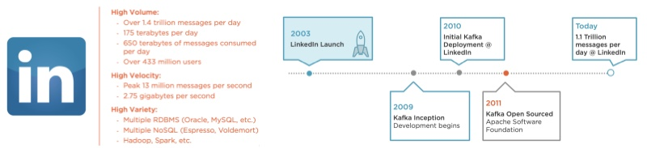

Kafka: A high-throughput distributed messaging system。客户端和服务器之间的通信通过简单、高性能、语言无关的TCP协议完成。
1. What was the primary problem Apache Kafka was designed to address?
Reliable and scalable data distribution.
特点：
- High throughput
- Horizontally scalable
- Reliable and durable
- Loosely coupled Producers and Consumers
- Flexible publish-subscirbe semantics
应用场景： - Database replication
- Log shipping
- Extract, Transform, and Load (ETL)
- Messaging
- Custom middleware magic
2. Kafka三个关键功能
- 发布和订阅记录流
- 以容错的持久方式存储记录流
- 记录发生时处理流
3. Kafka四大核心API
- Producer API：允许应用程序发布的记录流至一个或多个Kafka的Topic。
- Comsumer API：允许应用程序订阅一个或多个Topic，并处理他们记录的数据流。
- Stream API：允许应用程序充当流处理器，从一个或多个主题消费的输入流，并产生一个输出流至一个或多输出的主题，有效的变换输入流和输出流。
- Connector API：允许构建和运行Kafka Topic链接到现有的应用程序或数据系统中重用生产者或消费者。例如，关系数据库的连接器可能捕捉每个对表的更改。
4. Kafka's Architecture
Worker node roles: Controllers, Leaders, and Followers.
Characteristics of distributed systems:
- Worker node roles: Controllers, Leaders, and Followers
- Reliability through replication
- Consensus-based communication
In Kafka, these worker nodes are the Kafka brokers where Kafka keeps and maintains topics. The Kafka Broker is a software process, also referred to as an executable or demon service that runs on a machine, a physical machine or a virtual machine. A synonym for a Broker is also a server, but I like to avoid using the term server, since it has a tendency to be overloaded. The Broker has access to resources on the machine, such as the file system, which it uses to store messages which it categorizes as topics.
Controller has some critical responsibilities:
- Maintain an inventory of what workers are available to take on work.
- Maintain a list of work items that has been committed to and assigned to workers.
- Maintain active status of the staff and their progress on assigned tasks.

Reliable work distribution:
If the controller determines redundancy is required, it will promote a worker into a leader, which will take direct ownership of the task assigned. It will be the leader's job to recruit two of its peers to take part in the replication. In Kafka, the risk policy to protect against loss is known as its replication factor. Once peers have committed to the leader, a quorum is formed, and these committed peers now take on a new role in relation to a leader, a follower.

5. Kafka Topic
Central Kafka abstraction;
Named feed or category of messages:
- Producers produce to a topic
- Consumers consume from a topic
Logical entity;
Physically represented as a log;
Kafka topic stores a time-ordered sequence and immutable facts as events of messages that share the same category.

Topics can span an entire cluster of Brokers for the benefit of scalability and fault-tolerance. With the abstraction of a topic, a producer simply needs to publish messages to that topic. How it's maintained and managed over the multiple Brokers is not its concern.

6. Consumer offset
It's a placeholder(类似于书签):
- Last read message position
- Maintained by the Kafka Consumer
- Corresponds to the message identifier
7. Message Retention Policy
Apache Kafka retains all published messages regardless of consumption
Retention period is configurable
- Default is 168 hours or seven days Retention period is defined on a per-topic
basis
Physical storage resources can constrain message retention
8. Kafka partition

The topic as a logical concept is represented by one or more physical log files called partitions. The number of partitions in a topic depends on the circumstances in which Apache Kafka is intended to be used.
As you know, a physical node upon which the broker and the partition log resides is limited by a finite amount of computational resources, such as CPU, Memory, Disk Space, and Network.
For topic with more partitions, the default, a specific partitioning scheme is not used, so the producer is just doing it round-robin.
9. Distributed partition management
When a command to create a topic with three partitions is issued, it is handled by Zookeeper, who is maintaining metadata regarding the cluster. At this stage, Zookeeper is specifically going to look at the available brokers and decide which brokers will be made the responsible leaders for managing a single partition within a topic. When that assignment is made, each unique Kafka broker will create a log for the newly assigned partition.

When a producer is ready to publish messages to a topic, it must have knowledge of at least one broker in the cluster, so it can find the leaders of the topic's partitions. Each broker knows which partitions are owned by which leader. The metadata related to the topic is sent back to the producer so it can begin to send messages to the individual brokers participating in managing the topic, or I should say, the partitions in that topic.

When consuming messages from the cluster, the consumer inquires of Zookeeper which brokers own which partitions, and gets additional metadata that affects the consumer's consumption behavior, particularly in scenarios where there are large groups of consumers sharing the consumption workload. Once the consumer knows the brokers, with the partitions that make up the topic, it will pull the messages from the brokers based on the message offset per partition. Because messages are produced to multiple partitions and at potentially different times, consumers working with multiple partitions are likely going to consume messages in different orders, and will therefore be responsible for handling the order if it is required.

10. Achieving reliability with Apache Kafka Replication
With a replication factor of three set, it is the leader's job to get peer brokers to participate in a quorum for the purposes of replicating the log to achieve the intended redundancy level. When the leader of a partition has a quorum, it will engage its peers and start copying the partition log. When all members of the replication quorum are caught up, and a full synchronized replica set is in place, it is reported throughout the cluster that the number of in-sync replicas, or ISRs is equal to the replication factor for that topic in each partition within it. Obviously, this is an important metric.